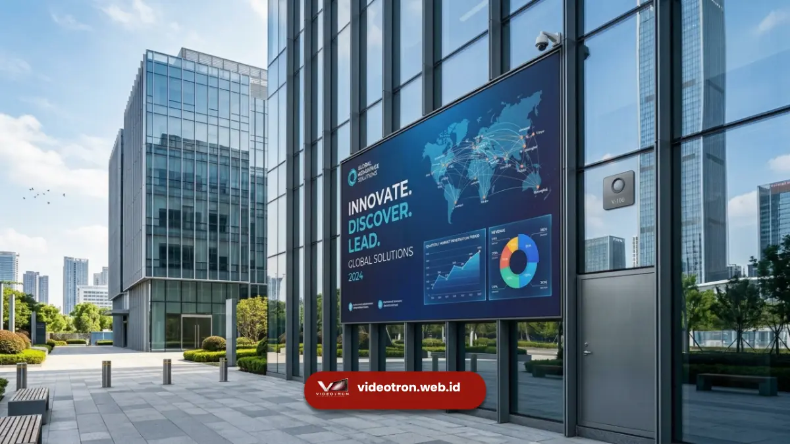

Videotron outdoor dengan brightness sensor otomatis adalah videotron yang dilengkapi sensor cahaya untuk menyesuaikan kecerahan layar secara real-time mengikuti kondisi cuaca dan intensitas sinar matahari. Fitur ini memastikan tampilan tetap terlihat jelas baik saat cuaca cerah terik, mendung, maupun malam hari.
Videotron outdoor menghadapi tantangan pencahayaan yang jauh lebih dinamis dibanding videotron indoor. Sepanjang hari, intensitas cahaya matahari dapat berubah drastis akibat pergerakan matahari, awan, hujan, hingga pergantian musim. Tanpa penyesuaian kecerahan otomatis, videotron berisiko tidak terbaca jelas di siang hari terik atau justru terlalu menyilaukan pada malam hari.
Poin Penting Videotron Outdoor:
- Videotron outdoor menghadapi perubahan cahaya matahari yang jauh lebih ekstrem dibanding indoor.
- Brightness sensor otomatis menjaga keterbacaan konten pada kondisi cuaca apa pun.
- Kecerahan videotron outdoor idealnya mampu mencapai ribuan nit untuk mengimbangi sinar matahari langsung.
- Sensor cahaya yang responsif mengurangi risiko konten videotron tidak terbaca oleh audiens.
- Videotron outdoor berkualitas menyesuaikan kecerahan tanpa mengganggu kestabilan warna tampilan.
Mengapa Videotron Outdoor Wajib Memiliki Brightness Sensor Otomatis?
Videotron outdoor wajib memiliki brightness sensor otomatis karena kondisi cahaya di ruang terbuka berubah sepanjang hari secara signifikan, mulai dari cahaya matahari langsung pada siang hari hingga kegelapan pada malam hari, sehingga penyesuaian manual tidak akan mampu mengikuti perubahan tersebut secara efektif.
Pemasangan videotron di area publik seperti persimpangan jalan, area komersial, atau fasad gedung menuntut tampilan yang tetap terbaca dari berbagai sudut dan jarak pandang, dalam kondisi cahaya sekelilingnya yang terus berubah. Ketika matahari bersinar terik langsung ke arah videotron, kecerahan layar perlu meningkat signifikan agar konten tetap terlihat jelas oleh audiens di sekitarnya. Sebaliknya, saat malam tiba, kecerahan berlebihan justru berpotensi mengganggu kenyamanan visual pengendara maupun warga sekitar lokasi pemasangan.
Bagaimana Sensor Cahaya Bekerja pada Kondisi Cuaca Ekstrem?
Sensor cahaya pada videotron outdoor bekerja dengan membaca intensitas cahaya sekitar secara berkelanjutan, termasuk saat cuaca mendung, hujan, maupun terik menyengat, lalu menyesuaikan output kecerahan layar agar tetap proporsional dengan kondisi tersebut.
Pada cuaca cerah dengan paparan sinar matahari langsung, sensor akan mendeteksi nilai lux yang tinggi dan memerintahkan sistem untuk menaikkan kecerahan layar hingga mendekati atau mencapai batas maksimal videotron, yang umumnya berada di kisaran 5000 hingga 8000 nit untuk unit outdoor kelas komersial. Sebaliknya, saat mendung atau hujan, intensitas cahaya sekitar menurun sehingga sensor akan menurunkan kecerahan secara proporsional agar tampilan tidak terlalu terang dan tetap hemat energi.
Videotron outdoor berkualitas dirancang agar sensor tetap berfungsi akurat meski terpapar debu, kelembapan, atau perubahan suhu ekstrem, karena unit ini umumnya beroperasi sepanjang tahun tanpa perlindungan atap.

Pemasangan videotron outdoor di fasad gedung membutuhkan sensor cahaya yang tangguh.Apa Dampak Brightness Sensor Otomatis terhadap Kualitas Tampilan Videotron Outdoor?
Brightness sensor otomatis berdampak langsung pada konsistensi kualitas gambar videotron sepanjang hari, karena mampu menjaga tingkat kontras dan keterbacaan konten pada berbagai kondisi pencahayaan tanpa memerlukan intervensi manual dari operator.
Videotron yang mampu menyesuaikan kecerahan secara otomatis menghasilkan warna yang lebih stabil dan akurat, dibandingkan videotron dengan kecerahan tetap yang cenderung terlihat pudar saat siang terik atau terlalu kontras saat malam hari. Konsistensi tampilan ini penting terutama bagi videotron yang digunakan untuk keperluan promosi, informasi publik, maupun branding korporat, karena kualitas visual berpengaruh langsung terhadap persepsi audiens terhadap pesan yang disampaikan.
Selain itu, penyesuaian kecerahan otomatis turut membantu menjaga suhu operasional modul LED tetap stabil, karena panel tidak dipaksa menyala pada kecerahan maksimal secara terus-menerus tanpa kebutuhan yang jelas.
Pertimbangan Teknis Videotron Outdoor dengan Brightness Sensor Otomatis
Sejumlah aspek teknis berikut layak dipertimbangkan saat menentukan spesifikasi videotron outdoor:
- Tingkat kecerahan maksimal: Videotron outdoor umumnya membutuhkan kecerahan minimal 5000 nit agar tetap terbaca jelas di bawah sinar matahari langsung, dengan beberapa unit kelas premium mampu mencapai di atas 8000 nit.
- Ketahanan terhadap cuaca: Sensor cahaya dan seluruh komponen videotron outdoor perlu memiliki rating IP yang memadai agar tahan terhadap hujan, debu, dan kelembapan tinggi sepanjang tahun.
- Kecepatan respons sensor: Semakin cepat sensor merespons perubahan cahaya, semakin minim risiko tampilan videotron terlihat tidak sinkron dengan kondisi lingkungan sekitarnya.
- Sudut pemasangan videotron: Posisi videotron relatif terhadap arah matahari turut memengaruhi seberapa besar penyesuaian kecerahan yang dibutuhkan sepanjang hari.
Videotron outdoor yang dilengkapi brightness sensor otomatis memberikan jaminan tampilan yang konsisten, terbaca jelas, dan nyaman dilihat dalam berbagai kondisi cuaca sepanjang tahun. Bagi perusahaan maupun instansi yang berencana memasang videotron permanen di ruang publik, fitur ini menjadi pertimbangan teknis yang tidak boleh dilewatkan agar investasi videotron memberikan hasil maksimal dalam jangka panjang.
Dapatkan spesifikasi videotron outdoor dengan brightness sensor otomatis yang sesuai kebutuhan lokasi dan anggaran Anda melalui videotron.web.id. Tim kami siap membantu menentukan solusi videotron outdoor terbaik untuk kebutuhan bisnis maupun instansi Anda.

Hawa Nadira
LED Technology Consultant dan Visual Educator
Konsultan dan spesialis solusi display digital berdedikasi tinggi yang fokus membagikan panduan edukatif mengenai penerapan teknologi layar LED videotron untuk kebutuhan interior modern di Indonesia.